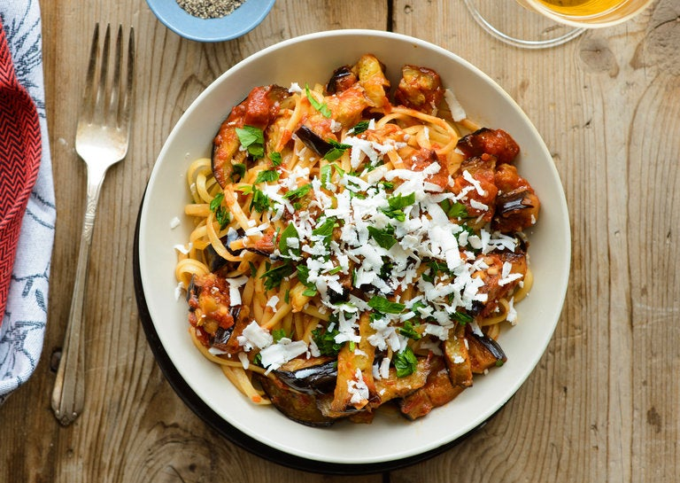

Pasta alla Norma

Description*
Traditionally, the eggplants are grilled until the skin is charred and the flesh inside is tender. However, if pressed for time, you can forgo the grilling and just boil the eggplant. But by doing so, you will no longer have that added smoky flavor, but it should still come out great.
You then is then peel the skin off the grilled eggplants and mash the flesh. Next, dip it in a mixture of egg, sautéed ground pork, and seasoning. Lastly, it will be fried until golden brown and slightly crispy.
Ingredients
- 1 1/2 pounds eggplant
- 1 tablespoon chopped garlic
- 3 or 4 dried chiles
- 1 1/2 pounds tomatoes
- 1 teaspoon dried oregano
- 1 pound long pasta
- 1/2 cup chopped parsley or basil
- 1/2 cup grated ricotta salata
Steps
- Slice the eggplant about ½ inch thick. Cook in abundant olive oil, without crowding, sprinkling with salt and adding more oil as needed. You will undoubtedly have to cook in batches; take your time and cook until the eggplant is nicely browned and soft. Remove to a plate; do not drain on paper towels. Meanwhile, put a large pot of water to boil and salt it.
- At the end of the cooking the eggplant, the pan will ideally have a couple of tablespoons of oil left. If there’s more or less, drain some off or add a bit. Turn the heat to medium, add the garlic and chiles, and cook until the garlic colors a little bit. Add the tomatoes and oregano, along with some salt and pepper; cook until saucy but not too dry, stirring occasionally.
- Cook the pasta until tender but not mushy. While it’s cooking, cut the eggplant into strips and reheat for a minute in the tomato sauce. Drain the pasta and toss it with the tomato sauce and the eggplant. Taste and adjust the seasoning, then top with the parsley or basil and grated cheese and serve.
*Recipe from nytimes